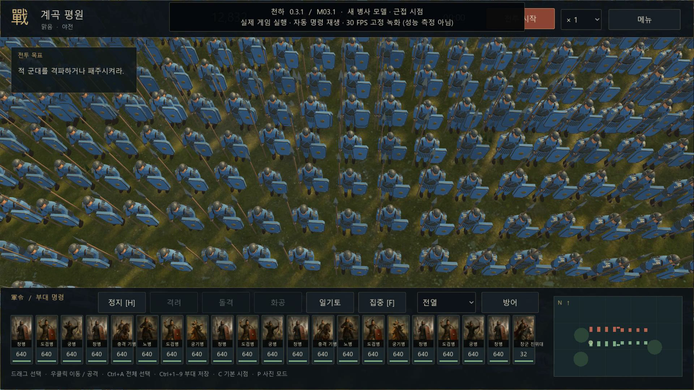

M03.1 · 확인된 렌더 성능측정 완료
근접 화면을 더 가볍게
이전—평균 FPS
개선 후—평균 FPS
원거리 평균—
근접 p99 프레임—
GPU 검사—
캠페인부터 전장까지, 삼국지 토탈워와 동등한 수준을 최대한 추구합니다.
독립 개발 중인 전략 게임 · 구현한 범위와 남은 격차를 함께 기록합니다.

진행 중인 기능부터 완료 근거와 다음 단계까지.
항목별 격차를 좁혀갑니다. 표의 ‘기반 구현’은 해당 분야 전체의 완성을 뜻하지 않습니다. 현재 동작하는 범위와 아직 필요한 기능을 함께 읽어주세요.
| 분야 | 현재 구현 | 남은 격차 | 다음 작업 |
|---|
조건에 맞는 분야가 없습니다. 다른 검색어나 분야를 선택해주세요.
기능 검사 통과와 대규모 실시간 성능을 따로 확인합니다.
초기 분리 모델의 검사입니다. 완전한 비관통·3D 강체·무기 골격 충돌을 검증한 결과가 아닙니다. 통합 플레이·GPU 측정은 별도입니다.